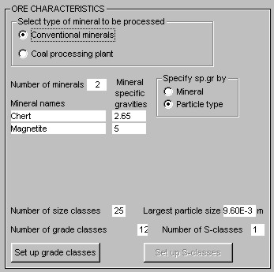

System data is data that is common to all units and streams throughout the plant. It includes the type of plant, the number and properties of the minerals and the particle class structure. System data is specified in the left hand panel of the system data editor.
